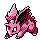

#032
Nidoran♂
Poison
Abilities: Poison Point, Rivalry, Hustle
Base stats BST 273
HP46
Attack57
Defense40
Speed50
Sp. Atk40
Sp. Def40
Evolution
dbbw EVOLVE_LEVEL, 16, NIDORINOLevel-up learnset
LevelMoveType
Lv. 1Poison StingPoison
Lv. 1LeerNormal
Lv. 1Peck
Lv. 1Focus EnergyNormal
Lv. 6Fury AttackNormal
Lv. 9Double KickFighting
Lv. 12Poison FangPoison
Lv. 15Horn AttackNormal
Lv. 21Toxic SpikesPoison
Lv. 24Poison JabPoison
Lv. 30Sucker PunchDark
Lv. 40ToxicPoison
Lv. 55Earth PowerGround